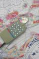

수문해석에 GIS 기술을 이용하는 것은 보편화되었다. 이 수업에서는 GIS를 이용해 수문해석에 필요한 데이터를 다루는 방법과 수문해석을 실시하는 과정을 연구한다.
Using GIS technology has become generalized in hydrologic analysis. This course will deal with how to manage data and design process of hydrological analysis with GIS.
TOC
- 수업개요 Introduction
- Week 01 : GIS란? / What is GIS?
- Week 02 : GIS 소프트웨어 / GIS Software
- Week 03 : 좌표계 및 투영 / Coordinate System and Projection
- Week 04 : Vector 데이터 다루기 / Working with Vector Data
- Week 05 : 레스터 데이터 다루기 / Working with Raster Data
- Week 06 : Plug in 사용하기 / Plugins
- Week 07 : Plug in 사용하기 (GRASS) / Plugins (GRASS)
- Week 08 : Plug in 사용하기 (SAGA) / Plugins (SAGA)
- Week 09 : 중간고사 / Mid-term Exam
수업개요 Introduction
Korean
- 이 수업을 통해 공학 연구생들은 GIS의 이론적인 부분을 학습하고 GIS 소프트웨어 실습을 통해, 향후 학습과 연구에 GIS를 활용할 수 있는 응용력을 갖출 것이다. QGIS 프로그램을 이용하여, 지리분석 및 수문해석에 활용할 수 있는 방법을 학습한다.
English
- Engineering students who take this class will attain abillity to apply useage of GIS in their own study and research by studying about background knowledge and practice of GIS, and also learn about how to geological analysis and hydrological analysis through QGIS program to solve hydrological issue.
수업목표 Goals
Korean
- GIS 분야 전문지식을 이해한다.
- QGIS를 이용하여 공간 분석을 통해 데이터를 대상으로 변환, 처리, 분석, 해석 등을 실습한다.
- 수문해석에 GIS를 활용하고, 연구에 적용하는 방법을 학습니다.
English
- Understand brief overall ideas of the GIS field.
- Practice transition, preprocess and analsys of data though spacial analsysis with QGIS.
- Apply GIS into hydrological analysis and improve the capablity of applying to research.
수업유형 Lecturing Type
- 이론 Theory : 60%
- 실험/실습 Experiments/Hands-on Practice : 40%
- 실기 Practice : 0%
- Abeek설계 Design(Abeek) : 0%
- 캡스톤디자인 Capstone Design : 0%
- 기타 Others : 0%
평가방법 Evaluation Method
- 중간고사 Mid-term : 30
- 기말고사 Final : -
- 과제보고서 Homework/Report : 30
- 발표 Presentation : 30
- 실험/실습 Experiments/Hands-on Practice : -
- 출석 Attendance : 10
- 기타 Others : -
주교재 Primary Textbook

- 서명 Title : Principles of Geographic Information Systems
- 저자명 Author Name : by O. Huisman, R.A. de By (ed.)
- 출판사 Published company : ITC 2009
- 출판년도 Published Year : 2009
- 비고 ISBN : -
- ISBN-13 : 9789061642695
- 다운로드 : [down]
부교재 1 Auxiliary Textboook 1

- 서명 Title : A Gentle Introduction to GIS
- 저자명 Author Name : T. Sutton, O. Dassau, M. Sutton
- 출판사 Published company : OSGeo
- 출판년도 Published Year : 2009
- 비고 ISBN : -
- ISBN-13 : -
- 다운로드 : [down]
부교재 2 Auxiliary Textboook 2
- 서명 Title : QGIS User Guide
- 저자명 Author Name : -
- 출판사 Published company : OSGeo
- 출판년도 Published Year : 2016
- 비고 ISBN : -
- ISBN-13 : -
- 다운로드 : [down]
Week 01 : GIS란? / What is GIS?
GIS Software
- PostgreSQL 데이터베이스 시스템을 이용하여 지형적 데이터 처리를 다룬 GIS 프로그램
- 오픈소스 GIS 툴 제공 연구기관인 Refractions Research에서 2001년도에 처음 공개되었으며, 2005년도에 첫번째 안정화된 버전이 배포되었다.
- GPL License
- 1982년 Construction Engineering Research Laboratory (USA-CERL)에서 개발이 시작되었고, 여러 기관을 겨쳐 현제는 OSGeo에서 프로젝트로 진행중이다.
- GPL License
- 독일 Dept. of Physical Geography, Göttingen의 연구팀에서 개발을 시작하였으며, 정식버전은 2007년도 버전이 마지막이나, 파생된 프로젝트는 지속적으로 개발 중이다.
- GPL License
- 2002년 Gary Sherman에 의해 개발이 시작되었고, 2007년도에 OSGeo 프로젝트로 포함되었다. 첫번째 공식 버전은 2009년도에 배포되었다.
- 현재까지 가장 활발하게 개발되고 있는 GIS 프로그램 중 하나이다.
수업 방향 및 다룰 내용 / Class Goals and Materials
- 실습을 통해 GIS의 전반적인 이론 및 GIS소프트웨어 사용방법을 익힘 (프로그램사용에 초점을 맞추고 관련 이론을 학습)
- 개별 프로젝트로 진행
- QGIS의 사용방법을 학습
- Raster 및 Vector 데이터를 편집 및 처리
- 수문분석 및 전공분야에 GIS 소프트웨어를 활용한 개인 프로젝트를 진행
Week 02 : GIS 소프트웨어 / GIS Software
QGIS
QGIS [Link] [wie]
QGIS(Quantum GIS)는 2002년도에 Gray Sherman이 개발을 시작하였으며, 2007년에 OSGeo에서 프로젝트로 함께 개발을 시작하였다. 첫번째 공식버전은 2009년도에 나왔으며 C++언어로 작성되었다. 플러그인과 라이브러리는 C++ 혹은 Python으로 제어가 가능하다. 오픈소스이며 GNU GPL로 배포되며, Mac OS X, Linux, Unix, Window에서 실행가능하다.
다운 및 설치 / Install
- QGIS 다운로드 링크 [Link]
메뉴얼 및 사용 / Manual and Usage
시작하기 전에 / Before Get Started
Configuration file
~/.qgis2
기본 옵션 / Options
- Settings > Option > General
- Settings > Option > CRS
- View > Panels
- View > Toolbars
단축키 지정 / Shortcuts
- Settings > Configue Shortcuts...
Week 03 : 좌표계 및 투영 / Coordinate System and Projection
- 기하학에서 유클리드 공간(Euclidean space)과 같은 다차원 공간에 점 혹은 요소를 위치시키기 위해 사용되어지는 체계 (기하학에서의 정의)
- GIS에서 좌표계는 가상의 지구공간에서 국부 혹은 전체적으로 지점 혹은 요소의 위치를 표시하기 위해 사용되어지는 체계 (GIS에서의 정의)
- 지구의 굽은 면을 평평한 면으로 묘사하는 방법
- GIS에서 데이터 좌표계를 정의하는 방법
중요 좌표계 / Significant Coordinate System
./data/main.gis.ods : Significant Coordinate System in Korea
- 좌표계는 좌표계 코드와 이름으로 구분한다.
- Spheroid : 타원체
- Code :
→ ESRI : Enviconmental Systems Research Institute
→ NHN : Nevt Human Network
- System :
→ PCS : Projected Coordinate System
- Datum : 좌표 기준점
- Projection : 투영법
→ UTM : Universal Transverse Mercator (global) : 지구를 16등분 하여 균일하게 외곡
- False Northing : 기준점이 북쪽으로 움직인 거리
- False Easting : 기준점이 동쪽 방향으로 움직인 거리
- Scale Factor : 스케일 계수
QGIS에서 투영법 / Projection in QIGS
- 1) 프로젝트 좌표계, 2) 데이터 좌표계, 3) 참조 좌표계를 고려하여 데이터를 관리한다.
→ 2) 데이터 좌표계 : 데이터 표현에 사용된 좌표계
→ 3) 참조 좌표계 : 프로젝트에서 데이터에 할당된 좌표계
- 데이터 좌표계와 참조 좌표계는 항상 일치시켜야 한다.
- 예제 데이터 [down]
→ 한국 전국 강우관측소 : ./data/st_p_shp.tar.gz
→ SRTM DEM 62_05 : ./data/srtm_62_05.tar.gz
→ SRTM DEM 62_06 : ./data/srtm_62_06.tar.gz
Raster Projection
- Raster > Projections > Wrap(Reprojection)...
- Set Output filename
- Set Target SRS
- Click OK
Vector Projection
- Right click on data in Layers window > Save as...
- Change CRS Option
- Click OK
Week 04 : Vector 데이터 다루기 / Working with Vector Data
벡터 데이터란 / What is Vector Layer
- 벡터의 정이 : 크기와 방향을 가진 물리량
- GIS에서 벡터 데이터 : point, line, polygon 데이터
벡터 데이터 파일 포멧 / Vector Data File Format
- OGR Vector format list [Link]
- ESRI Shapefiles [OGR] (*.shp *.SHP)
- Mapinfo File [OGR] (*.mif *.tab *.MIF *.TAB)
- Sptial Data Transfer Standard [SDTS] [OGR] (*catd.ddf *.CATD.DDF) (*.catd.ddf;*CATD.DDF)
- S-57 Base file [OGR] (*.000 *.000)
- Microstation DGN [OGR] (*.dgn *.DGN)
- VRT - Virtual Datasource [OGR] (*.vrt *.VRT)
- Atlas BNA [OGR] (*.bna *.BNA)
- Comma Separated Value [OGR] (*.csv *.CSV)
- Geography Markup Language [GML] [OGR] (*.gml *.GML)
- GPS eXchange Format [GPX] [OGR] (*.gpx *.GPX)
- Keyhole Markup Language [KML] [OGR] (*.kml *.KML)
- GeoJSON [OGR] (*.geojson *.GEOJSON)
- INTERLIS 1 [OGR] (*.itf *.xml *.ili *.ITF *.XML *.ILI)
- INTERLIS 2 [OGR] (*.itf *.xml *.ili *.ITF *.XML *.ILI)
- Generic Mapping Tools [GMT] [OGR] (*.gmt *.GMT)
- SQLite [OGR] (*.sqlite *.db *.SQLITE *.DB)
- ESRI Personal GeoDatabase [OGR] (*.mdb *.MDB)
- X-Plane/Flightgear [OGR] (apt.dat nav.dat fix.dat awy.dat APT.DAT NAV.DAT FIX.DAT AWY.DAT) (apt.dat;nav.dat;fix.dat;awy.dat;APT.DAT;NAV.DAT;FIX.DAT;AWY.DAT)
- Arc/Info ASCII Coverage [OGR] (*.e00 *.E00)
- AutoCAD DXF [OGR] (*.dxf *.DXF)
- Geoconcept [OGR] (*.gxt *.txt *.GXT *.TXT)
- GeoRSS [OGR] (*.xml *.XML)
- GDAL/OGR VSIFile Handler [OGR] (*.zip *.gz *.tar *.tar.gz *.tgz *.ZIP *.GZ *.TAR *.TAR.GZ *.TGZ)
Shape File
ESRI 벡터 데이터 저장 형식. [wie]
- Mandatory files
→ .shx : Shape file shape index file
→ .dbf : file containing the attributes in dBase format
- Other files
→ .qpj : complete parameters for QGIS
→ .qml : style defined file
→ .sbn : Shapefile spatial index format
벡터 데이터 다루기 / Working with Vector Data
벡터 데이터 가져오기 / Add Vector Layer
- Layer > Add Layer > Add Vector Layer [Shift+V]
Shape 파일 생성하기 / New Shapefile Layer
- Layer > Create Layer > New Shapefile Layer [Ctrl+Shift+N]
Attribute table
- Layer > Open Attribute Table
- Right click on Layer > Open Attribute Table
- Toggle Editting mode [Ctrl+E]
- Select features using an expression
- Unselect all [Ctrl+U]
- Move selection to top [Ctrl+T]
- Invert selection [Ctrl+R]
- Pan map to the selected row [Ctrl+P]
- Zoom map to the selected row [Ctrl+J]
- Copy selected row to the clipboard [Ctrl+C]
- Delete Column [Ctrl+L]
- New Column [Ctrl+W]
- Open Field Colulator [Ctrl+I]
CSV 파일 Shape 파일로 변환하기 / Converting CSV file to Shape file
- Layer > Add Layer > Add Delimited Text Layer
- Right click on the layer > Save As...
Vector Process
- OpenStreetMap
- Analysis Tools
- Research Tools
- Geoprocessing Tools
- Geometry Tools
- Data Management Tools
Week 05 : Raster 데이터 다루기 / Working with Raster Data
레스터 데이터란 / Raster is Vector Layer
- Raster Data : 행렬구조와 각 셀에 값을 가진 컴퓨터 그래픽을 나타내는데 사용되는 데이터
- GIS에서 Raster Data : 지구 표면의 위 혹은 주변을 나타내는 행렬구조를 가진 데이터
레스터 데이터 파일 포멧 / Raster Data File Format
- GDAL Raster Formats [Link]
- Geotiff
- ArcInfo Binary Grid
- ArcInfo ASCII Grid
레스터 데이터 다루기 / Working with Raster Data
레이터 데이터 가져오기 / Add Vector Layer
- Layer > Add Layer > Add Raster Layer [Shift+R]
Raster Process
- Projections
- Conversion
- Extraction
- Analysis
- Miscellaneous
- Gdal Tools Settings
Week 06 : Plug in 사용하기 / Plugins
- 설정 :
- 위치 :
Window : C:\Users\Username\.qgis\python
Plugin 01 : Coordinate Capture
Capture mouse coordinates in different CRS
- 링크 : QGIS_manual.Plugins.Coordinate_Capture_Plugin [man]
- 설치 : Plugins > Manage and install plugins ... > Coordinate Capture
- 사용 : View > Panels > Coordinate Capture
Plugin 02 : TMS For Korea
QGIS plugin. Daum, Naver, Olleh, VWorld, NGII Map Layers for Korean users
- 링크 : QGIS Python Plugins Repository : TMS for Korea [Link]
- 설치 : Plugins > Manage and install plugins ... > TMS for Korea
- 사용 : Web > TMS for Korea
Plugin 03 : OpenLayers Plugin
OpenStreetMap, Google Maps, Bing Maps, MapQuest layers and more
- 링크 : QGIS Python Plugins Repository : OpenLayers Plugin [Link]
- 설치 : Plugins > Manage and install plugins ... > OpenLayers Plugin
- 사용 : Web > OpenLayers plugin
Plugin 04 : Table Manager
Manages the attribute table structure
- 링크 : QGIS Python Plugins Repository : Table Manager [Link]
- 설치 : Plugins > Manage and install plugins ... > Table Manager
- 사용 : Vector > Table Manager
Plugin 05 : GEarthView
GEarthView plugin displays QGis view and features with attributes (selected layer) into Google Earth
- 링크 : QGIS Python Plugins Repository : GEarthView [Link]
- 설치 : Plugins > Manage and install plugins ... > GEarthView
- 사용 : Web > GEarthView
Week 07 : Plug in 사용하기 (GRASS) / Plugins (SAGA)
Grass GIS
- 1982년 Construction Engineering Research Laboratory (USA-CERL)에서 개발이 시작되었고, 여러 기관을 겨쳐 현제는 OSGeo에서 프로젝트로 진행중이다.
- GPL License
GRASS in QGIS
Insall : default in QGIS 2.14 or above
Access :
→ Plugins > GRASS
→ Processing Toolbox > GRASS GIS 7 comands [169 geoalgorithms]
수문분석을 위한 GRASS 플러그인 예제 / Example for Hydrological Analysis with GRASS Plugin
Fill Sink & Flow Direction
r.fill.dir [Link]
Filters and generates a depressionless elevation map and a flow direction map from a given elevation raster map.
- input : DEM
- output : Filled DEM, Flow Direction
Slope and Aspect
r.slope.aspect [Link]
Generates raster maps of slope and aspect from a elevation map (Aspect:45 90 135 180 225 270 315 360)
- input : Filled DEM
- Output : Slope, Aspect
Stream network
r.stream.extract [Link]
Performs stream network extraction.
- input : Filled DEM
- output : stream network
Week 08 : Plug in 사용하기 (SAGA) / Plugins (SAGA)
SAGA GIS
- 독일 Dept. of Physical Geography, Göttingen의 연구팀에서 개발을 시작하였으며, 정식버전은 2007년도 버전이 마지막이나, 파생된 프로젝트는 지속적으로 개발 중이다.
Saga in QGIS
- Mudul Libray Documentation (v2.2.6) - Contents [Link]
- Mudul Libray Documentation (v2.2.6) - Full Mudule Index [Link]
Access :
수문분석을 위한 SAGA 플러그인 예제 / Example for Hydrological Analysis with SAGA Plugin
Fill Sink (wang & liu)
[Link]
This module uses an algorithm proposed by Wang & Liu to identify and fill surface depressions in digital elevation models.
- input : DEM
- output : Filled DEM, Flow Direction, Watershed Basins
Catchment area (flow tracing)
[Link]
Calculate Catchment Area.
- input : DEM
- output : Catchment area Grid, Flow Path Length
Week 09 : 중간고사 / Mid-term Exam
데이터 받기 / Data DownloadProblem 01 : 파일 불러오기 / Import Data
Korea.shp : 한국 대권역
Korea.asc.shp : 안성천 유역
Tip → Layer > Add Layer > Add Vector Layer
pc.ldcv.asc : 평창강 유역 토지피복도
Tip → Layer > Add Layer > Add Raster Layer
Tip → Layer > Add Layer > Add Delimited Text Layer
Y field : Y (EPSG 5186)
Problem 02 : 좌표계 / Coordinate System
Probem 03 : 벡터 다루기 /Working with Vector
Input vector layer : st.wls.shp
Clip layer : Korea
Input vector layer : han.shp
Union layer : korea.asc.shp
Problem 04 : 레스터 다루기 / Working with Raster
Input file : pc.dem
Check "Mask layer"
Interval between contour lines : 100
Problem 05 : 지도 제작 / Map Producing

Problem 06 : 플러그 인 / Plug-ins